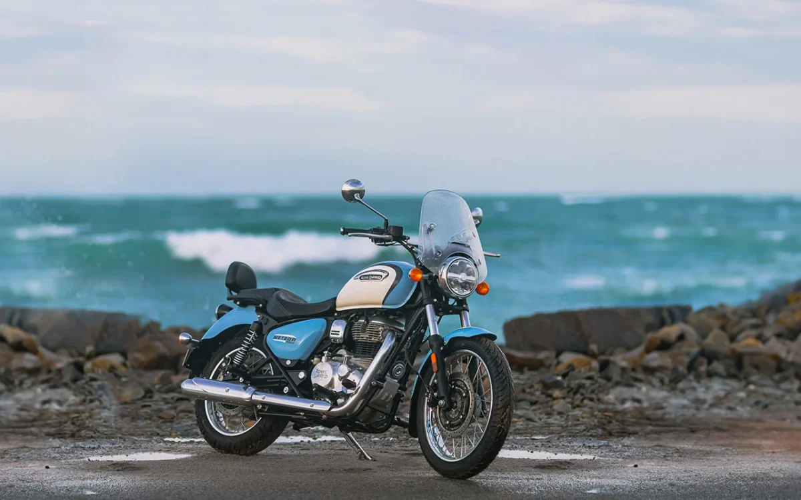

imagem retirada de mobilidade.estadao.com.br
Viajar de moto é uma das experiências mais libertadoras que existem, mas a "melhor" escolha depende totalmente do seu destino e do seu estilo de pilotagem. Em 2026, o mercado oferece opções que equilibram tecnologia de ponta com o clássico conforto para longas distâncias.
Aqui estão as categorias e modelos que dominam as estradas:
1.As Rainhas do Asfalto (Grand Tourers)
Se o seu plano é atravessar estados por rodovias impecáveis, com garupa e muita bagagem, o foco é luxo e estabilidade.
- Honda GL 1800 Gold Wing: O padrão ouro. Tem até airbag, marcha à ré e um motor de 6 cilindros que parece um tapete voador.
- BMW K 1600 GTL: Tecnologia alemã pura, com som de alta fidelidade e um motor incrivelmente forte para ultrapassagens sem esforço.
- Harley-Davidson Road Glide: Para quem curte o estilo "Bagger" com muito torque e aquele visual clássico americano.
2. As "Faz-Tudo" (Big Trails e Adventure)
São as motos mais versáteis. Vão bem no asfalto e não se intimidam se o GPS te mandar para uma estrada de terra.
- BMW R 1300 GS: A sucessora da lendária 1250. É mais leve, tecnológica e continua sendo a favorita para quem quer dar a volta ao mundo.
- Triumph Tiger 1200: Destaca-se pelo motor tricilíndrico que une o torque de um motor de dois cilindros com a elasticidade de um de quatro.
- Honda Africa Twin (CRF 1100L): Excelente para quem pretende encarar um off-road mais sério durante a viagem, especialmente na versão Adventure Sports.
3. Custo-Benefício e Médias Cilindradas
Para quem quer viajar com conforto sem investir o preço de um carro de luxo.
- Kawasaki Versys 650 / 1000:Uma das melhores ergonomias do mercado. É uma "crossover" (visual de trail, mas alma de estrada).
- Honda NC 750X:Famosa pela economia de combustível e pelo prático porta-objetos onde normalmente ficaria o tanque.
- Royal Enfield Himalayan 450:Uma opção robusta e acessível para quem busca uma aventura mais pausada e "raiz".
O que considerar antes de escolher:
- Ergonomia: Sente na moto. Em viagens de 8 horas, 2 centímetros no guidão fazem a diferença entre prazer e dor nas costas.
- Autonomia: Verifique o tamanho do tanque. Em certas regiões (como o Atacama), postos de combustível são raros.
- Capacidade de Carga: A moto aceita baús laterais (panniers) e top case? O peso extra altera muito o comportamento dela?
Dica de Ouro: Não existe moto perfeita, existe a moto certa para o seu próximo roteiro. Se for só asfalto, foque em proteção aerodinâmica (bolha). Se houver terra, foque em suspensão e curso.